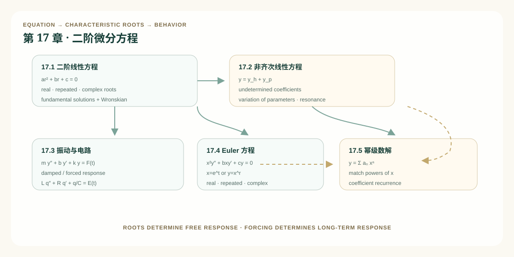

17.1-17.2：先齐次，后非齐次
先解决 Ly=0 的基本解，再为 Ly=g 找独立特解；不要用特解替代齐次部分。
第 17 章从二阶线性方程出发，用特征方程生成基本解；非齐次方程拆成齐次解与特解；应用部分把同一结构用于弹簧振动和 RLC 电路；最后用 Euler 方程和幂级数扩展可解类型。
00 · Batch Brief
先解决 Ly=0 的基本解，再为 Ly=g 找独立特解；不要用特解替代齐次部分。
弹簧、RLC 电路和阻尼系统共享二阶线性结构，但变量和物理单位必须分别解释。
Euler 方程用 x=e^t；变系数方程可尝试幂级数并把相同幂次匹配成递推。
01 · Dependency Map

常系数齐次方程的全部自由响应由 r²+pr+q 的根决定：实异根产生两条指数，重根增加 x 倍项，复根产生指数乘正弦余弦。
非齐次方程由齐次解加特解；Euler 方程通过 x=e^t 转为常系数；幂级数解则把未知函数变成系数递推。
02 · English Terminology
| English | 中文 | 简明定义 | 节 | 关键公式 / 记号 |
|---|
New Chapter Summary
先由特征方程构造齐次基本解，再通过叠加、待定系数或参数变易处理非齐次项；应用与级数方法都围绕二阶线性结构展开。
常系数齐次线性方程 ay″+by′+cy=0 由特征方程 ar²+br+c=0 分类。实异根、重根和复共轭根分别给出三类独立基本解。
a≠0；把 y=e^{rx} 代入后得到代数方程。
判别式 b²−4ac>0。
判别式 b²−4ac=0，需要第二个独立基本解 xe^{rx}。
判别式 b²−4ac<0；α、β 为实数且 β≠0。
在讨论区间 W≠0 时，两个基本解线性无关。
非齐次解是齐次解加一个特解。待定系数适合多项式、指数、正弦余弦及其乘积；参数变易法适合更一般的连续右端。
y_h 处理齐次方程，y_p 处理非齐次右端。
方程写成 ay''+by'+cy=g，W 为基本解 Wronskian。
强迫频率与自然频率相等时，响应含 t cos ωt 或 t sin ωt 项。
弹簧-质量系统和串联 RLC 电路都化为二阶线性方程。阻尼判别式决定过阻尼、临界阻尼或欠阻尼；强迫项可引入暂态与稳态响应。
位移方向、阻尼方向和强迫力符号必须先统一。
这里 b 是阻尼系数；分类决定自由响应的形态。
q 为电荷；电流 I=q'。
Euler 方程含 x²y″、xy′、y 的变系数项。令 x=e^t 后变为常系数方程，或直接尝试 y=x^r 得到代数特征方程。
令 x=e^t，可将 Euler 方程化为常系数方程。
根为实异、重根或复根时分别转换为 x^r、x^r ln x、x^α cos(βln x) 等基本解。
把 y=Σaₙxⁿ 代入二阶线性方程，逐项求导并匹配相同幂次。最低幂给出初值约束，其余幂次形成系数递推。
在展开点附近，将级数代入方程并逐项匹配 x 的幂。
递推关系由相同幂次系数等于零得到。
| 教材例题/定理 | 结论 | 位置 |
|---|---|---|
| 17.1 例题组 | 三类特征根分别生成指数、乘以 x 的指数和指数乘三角函数。 | Online p.17-1-17-6 / PDF p.1054-1059 |
| 17.2 例题组 | 待定系数要处理共振修正；参数变易法用 Wronskian 构造特解。 | Online p.17-7-17-14 / PDF p.1060-1067 |
| 17.3 例题组 | 阻尼判别和强迫频率决定振动/电路的长期形态。 | Online p.17-15-17-21 / PDF p.1068-1074 |
| 17.4 例题组 | Euler 方程通过 x=e^t 或 x^r 假设化为代数分类。 | Online p.17-22-17-23 / PDF p.1075-1076 |
| 17.5 例题组 | 幂级数代入后由各阶系数等于零形成递推。 | Online p.17-24-17-29 / PDF p.1077-1082 |
根 r 对应基本解 e^{rx}，不是函数 y=r。
重根时两个基本解是 e^{rx} 与 xe^{rx}。
r=α±iβ 时先写 e^{αx}，再乘三角函数。
完整解必须包含齐次解与特解。
强迫频率与自然频率重合时要乘 x。
x=e^t 后代数方程必须完全化为 t 的常系数形式。
05 · Deliberate Practice
题目覆盖概念辨析、计算、证明/说明、应用和综合；先独立作答，再展开提示、关键步骤与完整解析。
06 · Recall & Diagnosis
| 练习编号 / 知识点 | 错误类型 | 应回看的内容 |
|---|---|---|
尚未编辑
07 · PDF Quality Gate
| 检查项 | 结果 | 证据 / 说明 | 缺陷等级 |
|---|---|---|---|
| G1 版本与来源 | 已通过 | Online第17章17-1-17-29与PDF物理页1054-1082逐节核对 | 无 |
| G2 章节覆盖 | 已通过 | 17.1-17.5 完整 | 无 |
| G3 术语 | 已通过 | 46 个术语，按章节检索 | 无 |
| G4 定理与公式 | 已通过 | 15 个页面公式，条件随公式展示 | 无 |
| G5 例题结论 | 已通过 | 代表例题与定理均附教材页和 PDF 页锚点 | 无 |
| G6 练习与答案 | 已通过 | 15 道原创题，五种题型、三级答案 | 无 |
| G7 数学渲染 | 已通过 | 本地 KaTeX；公式裁切在桌面、移动端和打印态分别检查 | 无 |
| G8 图表与链接 | 已通过 | B9 知识图、节导航、术语与练习检索可用 | 无 |
| G9 网页与打印 | 已通过 | 桌面、390px 移动端和 A4 PDF 独立检查 | 无 |
| G10 版权与版本 | 已通过 | 原创概要、术语整理、知识图和自编练习；不复制教材正文 | 无 |
08 · Source Ledger
| 节 | 教材页 | PDF物理页 | 内部标题 |
|---|---|---|---|
| 17.1 | 17-1-17-6 | 1054-1059 | 二阶线性方程 |
| 17.2 | 17-7-17-14 | 1060-1067 | 非齐次线性方程 |
| 17.3 | 17-15-17-21 | 1068-1074 | 振动与电路应用 |
| 17.4 | 17-22-17-23 | 1075-1076 | Euler 方程 |
| 17.5 | 17-24-17-29 | 1077-1082 | 幂级数解 |